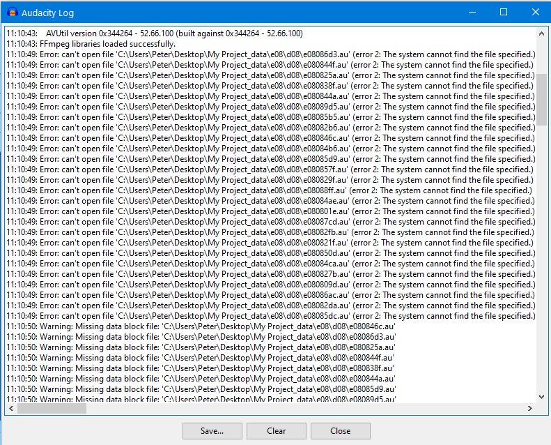

Warning - Missing Audio Data Block Files
This warning message will be shown when you attempt to open an Audacity project which has audio data missing for some reason.
Possible causes of this error:
- It can be very easy to get this problem when working over a network or using removable media.
- Disk errors could also be a cause.
- Overly aggressive security / system maintenance products could cause such problems.
- User errors have been known (users messing with the contents of the project's _data folder).
The warning dialog in project context

This shows the image in the context of the project that is trying to be opened.
Note that Audacity has the project ready to be opened displayed with the missing data shown as silences.
Your options
You have three options offered to you at this stage:
- Close project immediately with no further changes (default):
- Choosing this default option will cause Audacity to abandon the opening of the project.
- Audacity will leave your data exactly as it was prior to you attempting to open the project.
- Treat missing audio data as silence (this session only):
- If you choose this option Audacity will treat the missing audio data as silence, but only while it is open
- If and when you subsequently Save the project Audacity will just leave the gaps, so the next time you Open the project you will get this message again.
- However if you Export the project or part of it the gaps will be exported as silences.
- Replace missing audio with silence (permanent immediately):
- If you choose this option Audacity will immediately and permanently replace all the missing sections with silence (not gaps).
- The next time you open the project you should no longer see this warning, Audacity will just open the project, with the missing data replaced by silence.
Once you have made your choice, simply click on the button.
| Choosing the first option gives you time to consider what you might be able to do to retrieve your missing data. |
The Log file
If you want to see further details of the missing block files click on the button. This is really designed for EXPERT users.
- 
It may be that the missing block files have been moved somewhere else on your computer so you may wish to search for them and replace them in the precise location(s) indicated in the Log file.
But be very careful as there may be other block files with the same names as part of a different project.